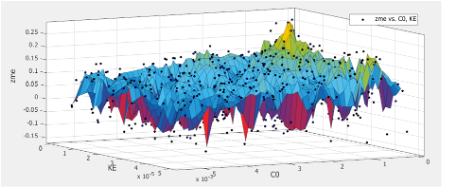
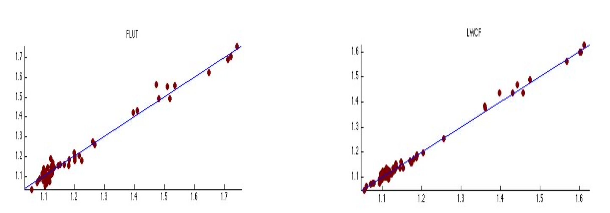
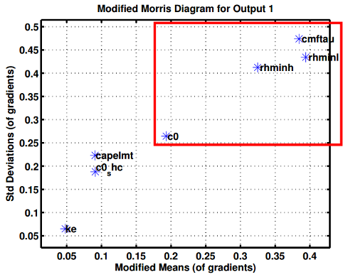
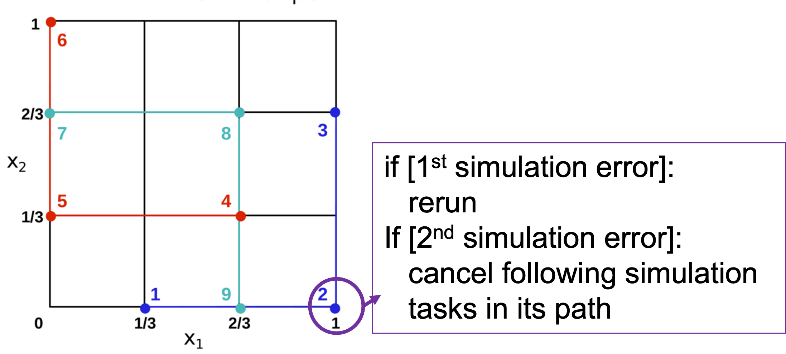

Uncertainty analysis for earth system models: parameter calibration, surrogate modeling, and sensitivity analysis
Earth System Models (ESMs) have a large number of uncertain parameters, which greatly impacts model performance. Traditionally, the uncertain parameter is manually calibrated and this tuning is time-consing and hard to extend. This issue of parameter tuning becomes even more serious with model development to involve more detailed process and related parameters. Parameter optimization algorithms provide a possible solution to automate parameter tuning in an efficient and effective manner. In this study, I explored different parameter optimzaitons approaches including simplex downhill, genetic algorithms, Shuffled Complex Evolution method (SCE-UA), Particle Swarm Optimization (PSO), etc. These algorithms are compared using mathmatical functions and earth system models. PSO is proved to be most effective with limited computation resources. However, these algorithms are all about single-objective optimization. An objective, for instance, is to decrease the discrepancy between observations and a model output (e.g., RMSE). It is commonly known from modeling practice that a model has different objective to be calibrated against. For example, terrestrial models have various processes. Taking carbon and hydraulic process as an example, there will be two objectives when parameters are calibrated to better fit model outputs with observations. To solve these multiple-objective optimization (MOO) problems, I also tried MOO algorithms such as NSGA, MOEA/D, EFR, etc. When applied to a Licom2 ocen model, MOO effectively improved both objective metrics compared to single-objective optimzation methods. Another concern is that MOO may be not efficient with a large number of objectives in limited iterations (i.e., computation resources). Considering that, I tried dimension reduction approaches to reduce the number of objectives before parameter calibration. This attemption was applied on the the Grid-point Atmospheric Model of IAP LASG version 2 (GAMIL2). A detailed description of this work is available here.

The non-smooth and multimodal distribution of a model output again two parameters for GAMIL2 atmospheric model
|
Parameter calibration requires hundreds or thousands of model simulations, which is computationally expensive for complex models. For example, one-time simulation of CLM model takes several hours over thousands of core. It will take weeks to complete parameter calibration. If the calibration performance is not good enough or we update the optimization algorithms. Another week will be taken to re-run parameter calibration. This huge computation cost poses challenges regarding the feasibility of effective parameter calibration. To handle this challenge, surrogate-based optimization is proposed. This approach firstly fits a surrogate model with some prior model simulation results. This surrogate model is to emulate the outputs of the original model with a much cheaper computation cost. There are different surrogate modeling approaches, such as Multivariate adaptive regression (MARS), Radial basis function model (RBF), Kriging, SVM, etc. Considering the non-linear feature of earth system models, different kernals are utilized in surrogate modeling. A comparison of these surrogate modeling approaches was applied on the GAMIL2 atmopheric model. It found kriging is most effective to fit with the original model. At the same time, the sample size for training matters. And the fitting performance also varies with different model outputs. A detailed description of this work is available here.

The comparion of original GAMIL2 model outputs with outputs of surrogate model using Kriging
|
Another approach to reduce computation cost of parameter optization is to decrease the number of parameters to be calibrated. Sensitivity analysis (SA) is widely used for this purpose. There are two different groups of SA methods: qualitative SA and quantitative SA. Amoung these methods, Morris is most suitable for parameter ranking because of its efficiency and accuracy. I appied Morris on GAMIL2 atmospheric model and selected the 4 important parameters for further parameter calibration. A detailed description of this work is available here.

The result of parameter screening by Morris method for GAMIL2 atmospheric model
|
The accuracy of sensitivity analysis (SA) is influenced by many factors including suitable parameter range, metrics, iterations, etc. For example, an unreasonable set of parameter values will induce unrealistic model outputs and further influence the accuracy of following uncertainty quantifications such as SA. This also induce loss of computation resources. Taking Morris method as an example, this method firstly runs models according to specific sample pathes. One sample point in these pathes is a set of parameter values generated and corresponds to a one-time model simulation. An unreasonable sample point will destroy the whole sample path and waste the computation of model simulations with the following sample points within this path. Considering this challenge, a robust Morris sampling is proposed. This sampling stragety will evaluate the accuracy of every sample point generated and then decide to continue current sampling path or not. When appied this robut sampling strategy on a BCC_CSM2 atmospheric model, 94% of computation waste is avoided.

An robust Morris sampling strategy. Different color represent different sample pathes.
|